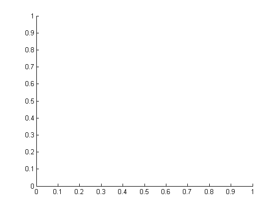
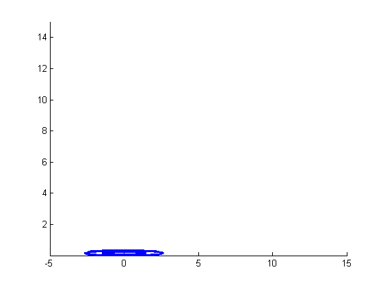
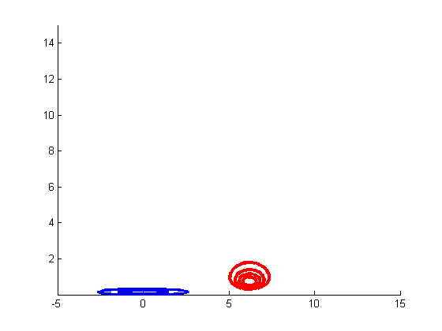
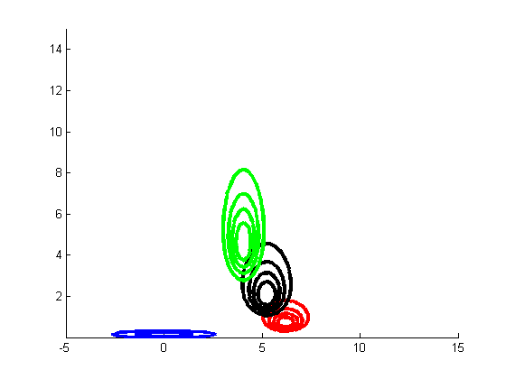
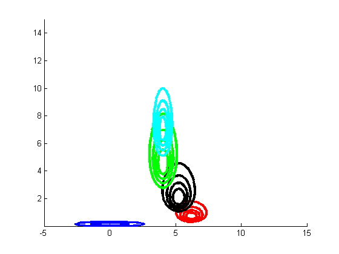
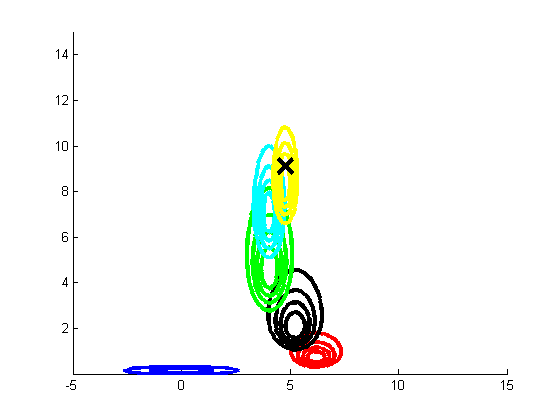
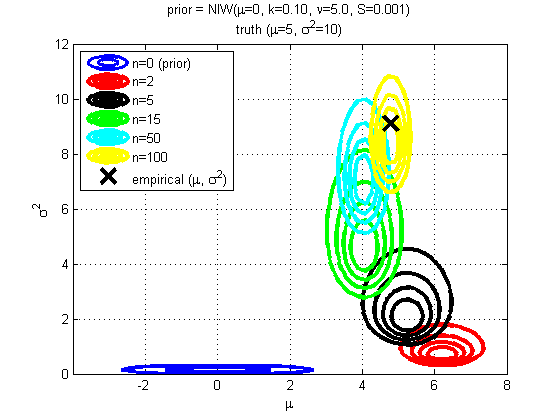

Sequential Bayesian updating of (mu,sigma) for a 1D gaussian
Contents
Prior
m0 = 0;
k0 = 0.1;
v0 = 5;
S0 = 0.001;
prior.mu = m0;
prior.k = k0;
prior.dof = v0;
prior.Sigma = S0;
Sample data
truth.mu = 5;
truth.Sigma = 10;
setSeed(1);
X = colvec(gaussSample(truth, 100));
xyrange = [-5 15 eps 15];
figure; hold on;
[styles, colors, symbols] = plotColors();

Plot prior
fn = @(x)exp(gaussInvWishartLogprob(prior, x(:, 1), x(:, 2)));
h = plotContour(fn, xyrange, 'color' , colors(1) ,...
'linewidth' , 2.5 ,...
'displayname' , sprintf('n=%d (prior)', 0));
set(h, 'levellist', sub(get(h, 'levellist'), [1,5]))

ns = [2 5 15 50 100];
ncontours = 4;
for i=1:length(ns)
n = ns(i);
data = X(1:n);
xbar = mean(data);
Xc = data-xbar;
XX = (Xc'*Xc)/n;
Update
post.k = k0 + n;
post.dof = v0 + n;
post.Sigma = S0 + n*XX + (k0*n)/(k0+n)*(xbar-m0)*(xbar-m0)';
post.mu = (k0*m0 + n*xbar)/post.k;
Plot
fn = @(x)exp(gaussInvWishartLogprob(post, x(:, 1), x(:, 2)));
plotContour(fn, xyrange, 'ncontours', ncontours, 'color' , colors(i+1) ,...
'linewidth' , 3 ,...
'displayname' , sprintf('n=%d',n));


 
end
Plot empirical mean & cov
plot(mean(X), var(X), 'X', 'markersize' , 15 , ...
'linewidth' , 3 , ...
'color' , 'k', ...
'displayname' , 'empirical (\mu, \sigma^2)');

legend('location', 'NorthWest');
xlabel(sprintf('%s', '\mu'))
ylabel(sprintf('%s', '\sigma^2'))
axis([-4 8 0 12])
grid on
box on
t = {sprintf('prior = NIW(%s=0, k=%.2f, %s=%.1f, S=%.3f)','\mu', k0, '\nu', v0, S0);
sprintf('truth (%s=%d, %s=%d)', '\mu', truth.mu, '\sigma^2', truth.Sigma)};
title(t)
set(gca, 'xtick', -2:2:8);
printPmtkFigure muSigmaPost
